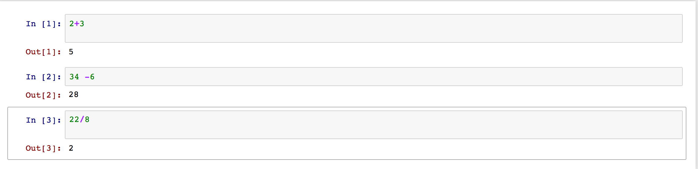

Python101
Pushplata
Full Stack Developer
*
github.com/pushp
linkedin
-
For Ubuntu
sudo apt-get install python3
-
For Windowns
Download the latest Windows(TM) installer from the Python site, either x86_64 or i686. Install it just as any other Windows software.
Running Jupyter Notebook
jupyter notebook
- Object-oriented: The programming paradigm, where "objects" can be somewhat separated from the rest of the program.
- An object is an entity that has a:
- Identity: Unique identifier of the object
- Value:
- Type: whether it is a string, number, etc.
- High-level: Abstracts from the computer it is being run on;
- Python Interpreter
- Source file
- WhiteSpaces and Indentation
- Comments
- Modules
Keywords and Identifiers
- class
- for
- and
- assert
- break
- pass
- import
- raise
- or
- while
- Many more ..
Reading input from the Keyboard
input()
Multiple assignments in a single line
a,b = 2,4
Ex: Swap two numbers in single statement.
Operator and Expression
Operators are the symbols which tells the Python interpreter to do some mathematical or logical operation. Few basic examples of mathematical operators are given below:
Examples


- Relational Operators
- Logical Operators
- Shorthand Operator
- Expressions
- Type Conversation
Looping
- While
- For
- range()
- continue
- break
Datatype
- List
- Using lists as stack and queue
- List Comprehensions
- Tuples
- Sets
- Dictionaries
Different methods available for Strings
- title()
- upper(),lower()
- swapcase(),split(),join()
- isalpha(),isnum()
- lstrip(),rstrip()
Function
Reusing the same code is required many times within a same program.
File Opening
File opening
To open a file we use open() function. It requires two arguments, first the file path or file name, second which mode it should open. Modes are like

File Closing
File closing After opening a file one should always close the opened file. We use method close() for this.>

Reading a file

Writing a file
fobj.write("raise ur hand if you are having any doubt")
Count spaces, tabs and new lines in a file
Exception
- TypeError
- ValueError
- NameError
- Exceptions
- Raise exceptions
- Using finally for cleanup